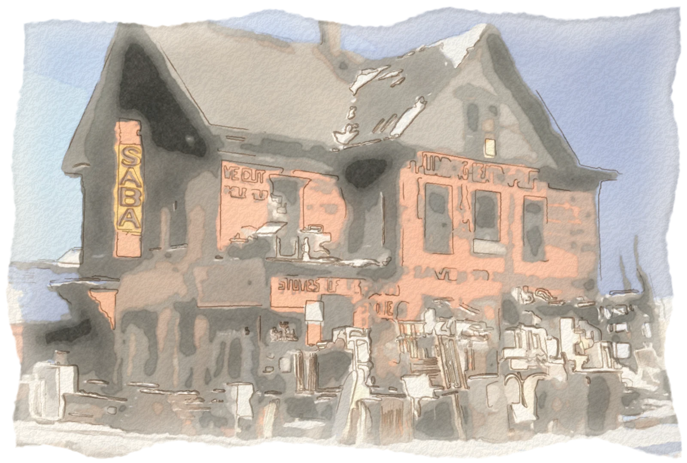
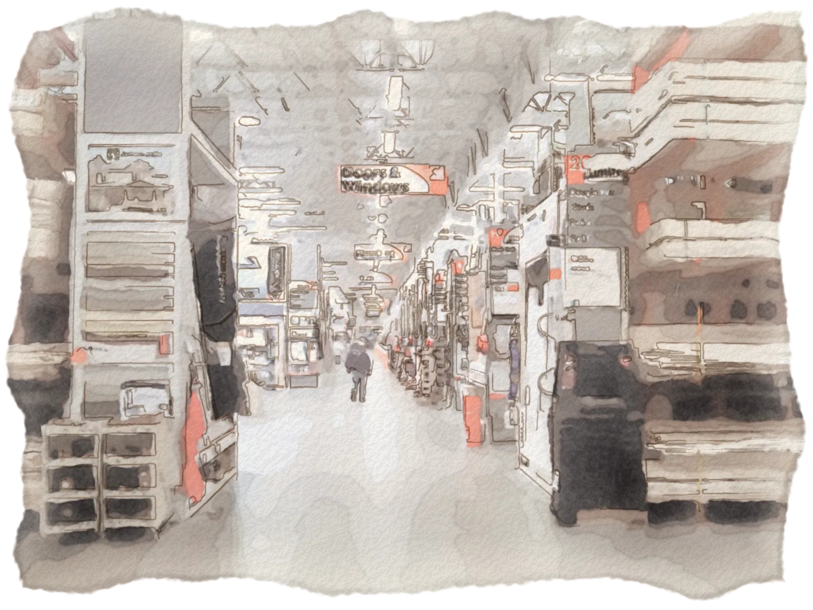

The trades-owner edition · an illustrated retelling
The Orange Apron
Two fired hardware executives, a Wall Street banker and a merchant in a velvet leisure suit built the biggest home-improvement chain in America. Sixteen short aisles on how they did it, how it nearly came apart, and what a 5-truck shop can take from it.
By Lane Davis II, founder, autoants · about 12 minutes
An independent retelling inspired by Acquired's episode "The Home Depot" (Ben Gilbert & David Rosenthal, 2026). Not affiliated with Acquired or The Home Depot.
2 → 2,359stores, from two subleased Atlanta boxes in 1979 to fiscal 2025
$7.0M → $164.7Byearly sales, first partial year to fiscal 2025
1losing year in the company's history: the first one
How to read this. Each chapter is an aisle and ends with a line for your shop. The shelf tags are the lessons, each with what it looks like in a 5-truck shop and where autoants can help. "Hosts" tags are arguments made on the episode; "Ours" are our own reading. Put the ones you want in your cart, and your receipt prints at the checkout.
AISLE 011929 – 1975
Retail guys, not hammer guys
Bernie Marcus in 2020, at 91.Watercolor after a photo by Rabbi Pinchas Taylor (CC BY video) · CC BY 3.0 · source
Bernie Marcus, the son of a Newark cabinetmaker, wanted to be a psychiatrist, couldn't pay for medical school and became a pharmacist in a discount store instead. That counter taught him retail. By 1972 he ran Handy Dan, a hardware chain owned by a Los Angeles holding company, with a title and no equity.
His first hire was a young finance man, Arthur Blank, because money was the part of the business he understood least. They ran Handy Dan like sharp retailers rather than hardware men, and it became the best operator in the trade.
For your shop The best tradesman in town doesn't automatically run the most profitable shop. Somebody has to own the numbers.
Aisle 01 · Lesson 2Ours
Pair the merchant with a numbers partner before growth exposes the gap.
Bernie knew money was his blind spot and hired Arthur as his finance man on day one.
In a 5-truck shop, this looks like the owner still prices jobs from memory while nobody watches margin per job. Put one person on the numbers every week.
The world they upended: counter service at a small-town hardware store, Texas, 1943.Watercolor after a photo by John Vachon, FSA/OWI · Public domain · source
Ken Langone, a Wall Street banker, asked around about who ran the best hardware stores. Everyone said Handy Dan. The small slice of it that traded publicly was priced at about two years of earnings, because investors lumped it in with a parent company headed for bankruptcy.
Langone flew out the next day, checked the numbers in person and bought close to a fifth of the company. Bernie, suspicious of a stranger from New York, brought a lawyer to lunch.
For your shop People price you by what they can see. If your best work never shows up in photos, reviews or search, you get priced like the shop down the street.
AISLE 031977 – 1978
Kicked with a golden horseshoe
The holding company's new boss, a bankruptcy specialist, resented Langone's stake. Bernie asked Ken to sell it to keep the peace; Ken warned that the stake was his protection, then sold anyway. On April 14, 1978, Bernie, Arthur and their controller were fired, on grounds a jury later found were made up. Bernie was 48, with no savings. The next morning, over breakfast in New York, Ken told him:
You just got kicked in the ass with a golden horseshoe.Ken Langone to Bernie Marcus, April 1978, as retold on Acquired
The customer they bet on. Carpenters framing a house in north Georgia, 1975.Watercolor after a photo by Al Stephenson, EPA DOCUMERICA · Public domain · source
Months earlier Bernie had walked through Sol Price's Price Club in San Diego, a warehouse that was itself the store, buying straight from manufacturers on thin markups. He'd been sure someone would bring that format to hardware. Now it could be him.
For your shop The setup that beats you probably already works in another trade or another city. Go look before someone brings it to yours.
AISLE 041978
The Cadillac that cost a fortune
Ross Perot offered $2 million for 70% of the new company, then insisted Bernie give up the Cadillac he still drove from Handy Dan. To Bernie it sounded like an employer giving orders again, a week after one had thrown him out. He walked away from money he badly needed.
Langone came back with friendlier terms: outside investors got 50%, spread across dozens of individuals, and with no single lead investor the founders set the price. Home Depot was incorporated on June 29, 1978. (The Perot terms come from the founders' memoir.)
For your shop Watch for the one customer, lender or general contractor big enough to start running your company. Many medium customers keep you your own boss.
AISLE 051978
The missing fourth founder

Stacked to the rafters: a plumbing and hardware yard in Brockton, Massachusetts, 1940.Watercolor after a photo by Jack Delano, FSA · Public domain · source
Scouting sites, the founders found a Los Angeles warehouse, HomeCo, already doing what they planned: stacked to the ceiling, the cheapest in town and packed with customers. Its owner, Pat Farrah, was a merchandising genius.
Due diligence showed the crowds were real and the business was broke. Pat had been ignoring supplier invoices, and his true margins were far below what he believed. So the founders let HomeCo fail and hired the man as the fourth founder, running buying and displays, well away from the books.
For your shop A full schedule is not the same as a good business. Busy at the wrong price is how good shops go under.
Aisle 05 · Lesson 1Hosts
Real demand at the wrong price is a broken business, not a great one.
HomeCo had the crowds and the format. It also had unpaid suppliers and margins far below what its owner believed.
In a 5-truck shop, this looks like a full board in July and a thin bank account in August, because the big jobs were bid too low.
They picked Atlanta and subleased two old discount stores. Money was so thin the team stacked empty boxes and paint cans to make the shelves look full. When managers polished the floors the night before opening, Pat had them scuffed with forklifts: this was meant to feel like a place for work boots.
Downtown Atlanta in 1974, five years before the first two stores opened on the city's edges.Watercolor after a photo by Jim Pickerell, EPA DOCUMERICA · Public domain · source
The first two stores opened on June 22, 1979. Thin capital set the model for good: the longest supplier terms they could get, inventory that turned fast and customers who paid on the spot. The first year lost $930,000. It was the only losing year the company would ever have.
For your shop Every store in one city shared the same ads. Jobs packed into a few neighborhoods share drive time, word of mouth and yard signs.
Aisle 06 · Lesson 1Hosts
Saturate one area so every dollar of marketing works several times.
A cluster of Atlanta stores let one newspaper or radio campaign feed all of them. Own a metro, then move on.
In a 5-truck shop, this looks like trucks spread across three parishes and yard signs nobody sees twice. Pick the ZIP codes you want and own them.
When cash is thin, payment terms and fast turns are the model.
With $2 million, the founders pushed for the longest supplier terms they could get and sold mostly for cash.
In a 5-truck shop, this looks like materials on the card for 30 days while the customer pays in 60. Deposits up front, and the invoice out the day the job closes.
To take more empty store sites, Langone took a four-store chain public on September 22, 1981, at $12 a share, with interest rates near their all-time high. Then came the sprint: Florida, Texas, California, the Northeast.
The founders admitted they had sold suppliers a future they hadn't yet earned, and then they delivered it. Sales passed $1 billion in 1986, and in 1989 Home Depot passed Lowe's.
Forty-seven years of sales, with the rival for scale
Annual net sales by fiscal year. Hover or tap a year for its store count. Shaded bands mark each CEO's tenure.
Home DepotLowe's (from fiscal 1989)
Sources: Home Depot annual reports (FY1979–88) and 10-K filings and SEC XBRL (FY1989–2025); Lowe's 10-K filings. Figures as originally reported. FY2006 includes HD Supply; FY2020 on includes the reacquired HD Supply; FY2024–25 include SRS and GMS.
For your shop Growth that lasts comes from doing the same thing well in more places, not from a new idea every year.
AISLE 081980s – 1990s
The plumber in the orange apron
The apron. Associates write their names on it, and some add the languages they speak.Watercolor after a photo by جیمبو دامبلی دیمبو (Wikimedia Commons) · CC BY-SA 4.0 · source
The copycats had low prices and big boxes too. What they didn't have was former plumbers, electricians and carpenters in the aisles, with orders to drop everything when a customer had a question. A homeowner who managed to paint one room came back to try drywall.
The numbers only worked at volume: a thin margin on enormous sales, bigger orders bringing better supplier prices, passed back as lower prices. And the story everyone repeated: an associate fixed a leaky faucet with a 25-cent washer instead of selling a new one, and the customer came back for a $100,000 kitchen.
Margin dollars, not margin percent: run it on your shop
The warehouse plan was a lower markup on far more volume. Here's the same arithmetic for a trades shop. The starting numbers are an example; put in yours. Nothing you type leaves your browser.
For your shop The answered phone is the product. The homeowner who gets a quick, straight answer from you calls you again for the bigger job.
Aisle 08 · Lesson 1Hosts
In specialty work, service is the product.
Former plumbers and electricians taught customers in the aisles. The copycats hired generic retail labor, and none of them survive.
In a 5-truck shop, this looks like the 7:40 a.m. call that goes to voicemail while everyone is on a roof. A text back in seconds keeps the job in play.
The associate who fixed a faucet with a 25-cent washer won the customer's kitchen remodel later.
In a 5-truck shop, this looks like the tech who fixes it for $90 instead of selling a replacement. That customer calls you first for the big one, if you stay in touch.
By the mid-1990s Home Depot was opening stores at a furious pace and going after contractors with credit accounts, pro desks and job-site delivery. In 1997 Bernie handed the CEO job to Arthur, and the problems growth had hidden came up: an $87.5 million discrimination settlement, nine regional buying offices that wasted national buying power, and a rebuilt Lowe's gaining ground.
When Langone asked who could replace Arthur, the honest answer was nobody.
For your shop Growth hides mess. The shop that adds trucks without adding a system finds out at the first big hire, the first bad month or the first time the owner is out sick.
Aisle 09 · Lesson 2Hosts
Fast growth hides management debt. It comes due at the handoff.
A store every few days masked a lawsuit, scattered buying and an empty bench. All three surfaced at the first CEO change.
In a 5-truck shop, this looks like dispatch lives in the owner's head and on a whiteboard. Fine at two trucks; at five, one sick day and the week falls apart.
Bob Nardelli as CEO, 2002.Watercolor after a photo by Neshan Naltchayan, U.S. Department of Labor · Public domain · source
The board brought in Bob Nardelli from GE. He fixed real things: one buying office instead of nine, and modern systems. But experienced associates gave way to part-timers, and customer satisfaction fell to last among major retailers.
On paper, everything doubled. Sales went from $45.7 billion to $90.8 billion, mostly because the store count doubled while sales at existing stores went nowhere. Gross margin crept from about 30% to about 33%, and prices lost their edge. The stock told the story.
Sales doubled. The stock went nowhere.
Growth of $100 with dividends reinvested, from the day before Nardelli was named CEO (Dec 4, 2000) to the last close before his exit was announced (Dec 29, 2006).
Home DepotLowe'sS&P 500 total return
Source: month-end adjusted closes from Yahoo Finance; endpoint returns computed on daily closes. Over the window: Home Depot +4.2%, Lowe's +213.7%, S&P 500 total return +18.7%.
For your shop Efficiency that cuts what customers came for isn't efficiency. A tighter route that skips the callback costs more than the miles it saved.
Aisle 10 · Lesson 1Hosts
Efficiency can cut out the very thing customers came for.
Part-timers and thinner staffing removed the expert help that defined the stores, and satisfaction fell to last.
In a 5-truck shop, this looks like a schedule packed so tight nobody has time to explain the work or come back for the callback.
Raising prices to hit a number quietly spends your reputation.
Gross margin rose from about 30% to about 33% and never came back down. Prices went from shockingly low to merely competitive.
In a 5-truck shop, this looks like prices creep up every season until the regulars start getting second quotes. Know what each point of price is worth before you move it.
At the May 2006 annual meeting, Nardelli took the stage alone; none of the other directors came. Each shareholder got one question and a one-minute clock, and it was over in about half an hour. Many people in that room were associates whose savings were in the stock.
In January 2007 the board pushed him out, with a departure package valued at about $210 million. Associates were reported cheering in the stores.
For your shop Your crew remembers how you treat them in a bad month, and they talk to your customers every day.
AISLE 122007 – 2014
Stop opening stores
The board's next pick, Frank Blake, was another GE man, and Nardelli's opposite. His first call was to Bernie, and he brought back the founders' upside-down org chart: customers on top, associates next, the CEO at the bottom.
When housing collapsed, Blake stopped building stores, closed weak ones, sold the HD Supply distribution arm for $8.5 billion and bought back stock through the crash. The store count barely moved for a decade while each store got far more productive.
Stop opening stores. Make the ones you have better.
Store count against sales per store, fiscal 1990–2025. Blake's tenure is shaded.
Source: 10-K filings. Sales per store is total net sales divided by year-end stores, so it is inflated in FY2006 by HD Supply, from FY2020 by the reacquired HD Supply and from FY2024 by SRS (dotted).
For your shop Before you buy the next truck, find out how much more the trucks you already have could do.
Aisle 12 · Lesson 2Hosts
Before the next store (or truck), make the ones you have more productive.
Blake held the store count roughly flat for over a decade, and sales per store roughly doubled.
In a 5-truck shop, this looks like getting more jobs out of the routes you already drive before you buy a sixth truck, hire a sixth driver and insure both.
YouTube took away some of the apron's edge, so Blake competed on having the thing close by, right now. Home Depot built its own distribution network, then buy-online-pick-up-in-store, then flatbed centers for lumber and bulk orders.

The main aisle of a Massachusetts store, 2014: a warehouse you're allowed to walk around in.Watercolor after a photo by John Phelan · CC BY-SA 3.0 · source
The insight: in project work, shopping online usually means picking up, not waiting for delivery. If you run out of grout halfway through a bathroom, you drive to the store now. When COVID hit, the network was ready, and sales went from $110 billion in fiscal 2019 to $157 billion in fiscal 2022.
For your shop The homeowner with water on the floor calls the next number if you don't pick up. Now beats best.
Aisle 13 · Lesson 2Hosts
Now beats best.
Two-day shipping is useless when you run out of grout mid-job. Pickup in store matched how projects really happen.
In a 5-truck shop, this looks like the estimate that goes out the same afternoon beats the better one that goes out Thursday.
Build the system in the slow months; it pays off in the rush.
Years of unglamorous distribution work looked dull until COVID. Then the network was ready.
In a 5-truck shop, this looks like storm week, when every phone in town rings at once. The text-back, the call list and the weather post were set up in the slow months.
With the stores healthy, Home Depot went back to the idea Nardelli had tried too early. It bought back the best part of HD Supply in 2020, paid $18.25 billion in 2024 for SRS Distribution, which supplies roofers, landscapers and pool builders, and SRS bought the drywall distributor GMS in 2025.
Today roughly half of its $165 billion a year comes from pros, and house tool brands that share one battery keep customers coming back to the same shelf.
For your shop A maintenance plan is your battery platform. Once a customer is on it, the next job is yours to lose.
Aisle 14 · Lesson 2Hosts
A platform that keeps customers coming back to the same shelf.
Exclusive tool brands that share one battery make every next tool easiest to buy at the same store.
In a 5-truck shop, this looks like the yearly tune-up card that brings the customer back to you, not to whoever is on top of Google that day.
Arthur Blank in 2016. He bought the Atlanta Falcons in 2002.Watercolor after a photo by Thomson200 (Wikimedia Commons) · CC0 1.0 · source
Bernie Marcus died in November 2024, at 95. Arthur Blank bought the Atlanta Falcons. Ken Langone never sold a share, holding through three drops of two-thirds or more. The executives Blake trained went on to run UPS, Floor & Decor and Lowe's.
For your shop Customers you keep compound. The second job from a customer you kept doesn't need an ad to find you.
AISLE 16The hosts' analysis
Keep the values, let the tactics go
Walk a store today and almost every founding rule is gone. The aisles have numbers, the shelves are neat, buying is national and goods come through distribution centers. The hosts' read is that dropping the tactics was mostly right: a giant wins for different reasons than an upstart.
What stayed is the value underneath: help the customer get the job done.
For your shop How you answered the phone at one truck won't work at five. Keep the promise; change how you keep it.
Aisle 16 · Lesson 1Hosts
Keep the founding values; let the founding tactics go.
Unnumbered aisles, regional buying, shipping straight to stores: nearly all of it was rightly dropped. A giant wins for different reasons than an upstart.
In a 5-truck shop, this looks like the owner's cell number on every truck door worked at one truck. At five, keep the fast answer and hand the phone to a system.
We'll send your receipt to your inbox and add you to Permits Pulled, our free monthly report for New Orleans trades owners: what the city's permit records show, in a 2-minute read.
See the math on your own jobs
Free one-week side-by-side: we plan one of your real weeks and put it next to what actually happened, before you pay anything.